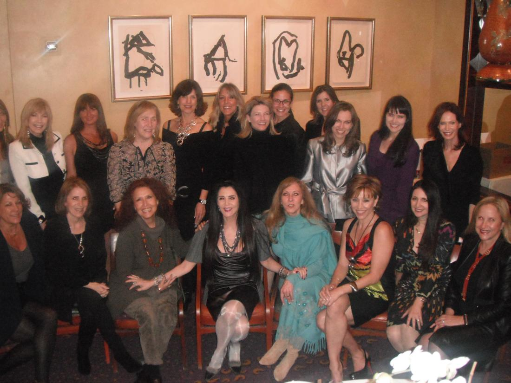
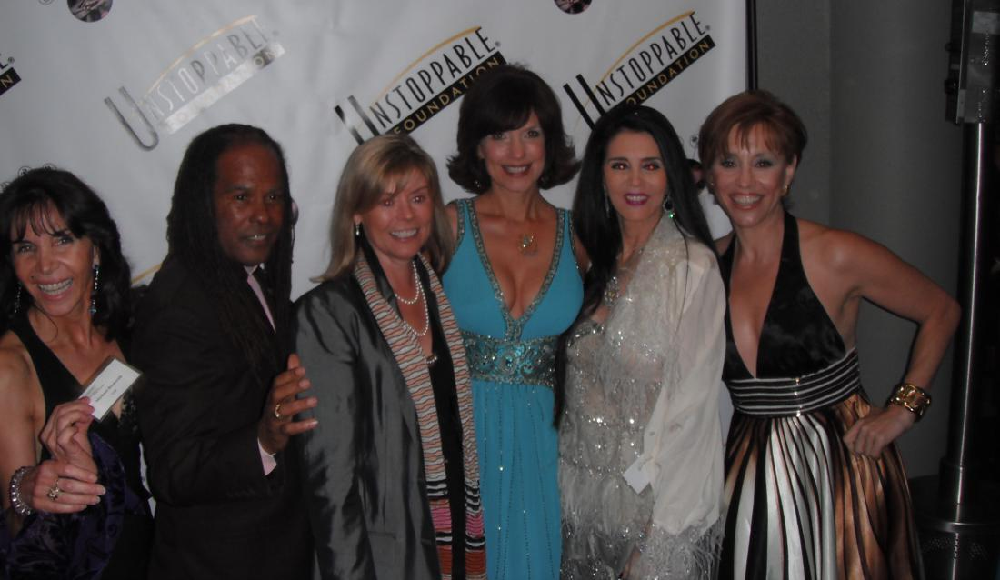
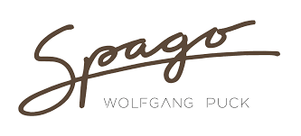
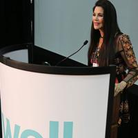

Barbara Lazaroff

We met when she sponsored a Powerful Woman luncheon at here restaurant and invited the most wonderful women!Barbara Lazaroff is a beacon of light and love and the central whirlwind of Hollywood cuisine as the co-owner of Spagos. Formerly married to chef Wolfgang Puck

Lazaroff is primarily known for conception and execution of singularly unique restaurants.Her innovative concepts and designs have received critical acclaim.
Her projects and business acumen have been featured in many magazines and books. Her credits are…. amazing
Co-Founder of the Wolfgang Puck Food Company (now Wolfgang Puck Worldwide)

In 1994, Ms. Lazaroff co-founded the Los Angeles-based Wolfgang Puck Food Co. and served as a board member, as the director of Restaurant Design and Development, and as part of the Real Estate and Site Selection committee until 2000. The Wolfgang Puck Food Company was reorganized as Wolfgang Puck Worldwide which encompasses a variety of restaurant, café concepts as well as a licensing platform for many aspects of the Wolfgang Puck brand.
Catering
Ms. Lazaroff and Chef Puck also have an extensive catering business, which garners international attention through such noteworthy events as the Academy of Motion Picture Arts and Sciences®, Governors Ball, GLAAD League Convention & Gala, The Louis Vuitton United Cancer Front Gala, Donna Karan/Marshall Field’s Fashion Show, Lincoln Park Zoo Gala and Lyric Opera Chicago.
Wolfgang Puck Catering brings a new level of innovation and inspiration to restaurant, special event, catering and food service management for cultural, corporate and entertainment venues across the world.
Restaurants
Ms. Lazaroff and Chef Puck co-own and operate fine dining restaurants:
(These links go to the official page at wolfgangpuck.com.)
- Chinois On Main – Santa Monica, CA (Los Angeles) ~ Opened 1983
- Postrio – San Francisco, CA ~ Opened 1989, now closed
- Spago – Las Vegas, NV ~ Opened 1992
- Spago – Beverly Hills, CA (Los Angeles) ~ Opened 1997
- Chinois – Las Vegas, NV ~ Opened 1998, now closed
- Trattoria Del Lupo – Las Vegas, NV ~ Opened 1999
- POSTRIO – Las Vegas, NV ~ Opened 2000
- Spago – Maui, HI ~ Opened 2001
- Vert – Hollywood, CA (Los Angeles) ~ Opened 2002, now closed
- Wolfgang Puck Bar & Grill – Las Vegas, NV ~ Opened 2004
- 20.21 – Minneapolis, MN ~ Opened 2005
- CUT – Beverly Hills, CA (Los Angeles) ~ Opened 2006
- Wolfgang Puck American Grille. Atlantic City, NJ ~ Opened 2006
- Red Seven @ The Pacific Design Center (W.P. Catering Division) – West Hollywood, CA (Los Angeles) ~ Opened 2007
Fashion
Lazaroff contributes much time to the fashion field as well. She has extended herself to judge and give direction to the students at Fullerton Fashion School, as well as Brooks College in Long Beach and is a devoted supporter of Otis School of Design.
Design Awards
- 1991 — Look West Award, Fashion Institute of Design and Merchandise
- 1991 — Platinum Circle Award, Restaurant/Hotel Design Magazine
- 1992 — The Interior Designers Institute of Newport Beach
- 1994 — Assopiastrelle Design Award, Association of Ceramic Tile & Refractory Manufacturers, Italy
- 1994 — Los Angeles Times, StyleFest Award
- 1995 — Hospitality Design Award, Dupont Antron
- 1996 — Ray Bradbury Creativity Award, Woodbury University Library Associates
- 2006 — Interior Designers Institute, Excellence in Design Award
- 2007 — Art to Life Award for Interior Design, Art and Living Magazine
Business Awards
- 1986 — Honors Profiles, Fashion Institute of Design and Merchandise
- 1992 — Cal State University, Northridge, Recognition of Distinctive Excellence
- 1993 — Nation’s Restaurant News, MUFSO Special Recognition (Multi-Unit Foodservice Operators Conference)
- 1994 — Restaurant of the Year – SPAGO HOLLYWOOD, James Beard Foundation
- 1994 — Business and Professional Women’s Award, United Jewish Fund
- 1995 — Hot Concept Award, National Restaurant Association /Lazaroff & Puck
- 1995 — Victoria Magazine, Women in Hospitality Award for Industry Excellence and Entrepreneurial Spirit
- 1996 — Restaurant & Institution’s Top 100 Independent Restaurants – SPAGO HOLLYWOOD
- 1997 — Innovator Award, Nation’s Restaurant News /Lazaroff & Puck
- 1998 — Top 10 List of Businesses Visa Award, The Best of Los Angeles –
- 1999 — UCLA Extension, Restaurant Industry Innovation Award for Creative Partnership
- 2000 — High Impact Restaurant Leadership Award, Restaurant Business
- 2000 — Millennium Hall of Fame Award, National Association of Women Business Owners-
- 2000 — Outstanding Achievements in Business & Community Contributions, Women in Business, LA
- 2001 — Women Chef & Restaurateurs’ Golden Fork Award (sponsored by the Culinary Institute of America)
- 2006 — Special Recognition Award, The Network of Executive Women in Hospitality, Los Angeles Chapter
- 2006 — NEWH – The Network of the Hospitality Industry, Award of Recognition
- 2011 — Los Angeles Business Journal, Women Making a Difference Awards’ Nominee
- 2013 — National Association of Women Business Owners Los Angeles, NAWBO-LA Legacy Award
(The restaurants have additional awards from organizations & magazines too numerous to list)
Humanitarian Awards & Special Recognitions
- 1989 — Mazon: A Jewish Response to Hunger, Special Recognition
- 1989 — City of Los Angeles Department of Aging, Certificate of Appreciation
- 1990 — Woman of Achievement, the Woman’s Group Friends of Tel Hasher
- 1990 — Hall of Fame Award, QUEST Children’s Organization /Lazaroff & Puck
- 1991 — Social Concern Award, American Jewish Committee /Lazaroff & Puck
- 1992 — St. Vincent Meals-on-Wheels, Thanks for being an Angel /Lazaroff & Puck
- 1993 — Scholarship Fund Award, Oralingua School for the Hearing Impaired /Lazaroff & Puck
- 1993 — Hollywood Entertainment Museum, Best Seat in the House Awards
- 1994 — Humanitarian of the Year Award, James Beard Foundation /Lazaroff & Puck
- 1995 — Silver Spoon, Food Arts Magazine /Lazaroff & Puck
- 1996 — Friend of Law Enforcement, Recognition of Outstanding Service & Support / Lazaroff & Puck
- 1997 — Decade of Service, Cedars-Sinai Medical Center /Lazaroff & Puck
- 1997 — Stars of Tomorrow Scholarship Gala, Fulfillment Fund /Lazaroff & Puck
- 1997 — Los Angeles Girl Scout Council, Special Recognition
- 1997 — City of Los Angeles, Muscular Dystrophy Association – Men & Women of the 90s / Lazaroff & Puck
- 1997 — Divine Design, Project Angel Food and DIFFA/LA
- 1997 — Athletes & Entertainers for Kids, Hero Award
- 1997 — University Hospital’s Ireland Cancer Center, 5 Star Sensation Special Recognition / Lazaroff & Puck
- 1998 — Elizabeth Glaser Pediatric Aids Foundation, Special Recognition / Lazaroff & Puck
- 1999 — Nevada Congressional Recognition, Safe Nest /Lazaroff & Puck
- 1999 — Ireland Cancer Center-Pediatric Oncology Unit, University Hospitals of Cleveland –
A room in the unit was named in honor of Lazaroff & Puck for their work - 2000 — Meals on Wheels Association of America, Golden Meal Award / Lazaroff & Puck
- 2001 — Hospitality Design Magazine, Humanitarian of the Year Award
- 2002 — University Hospitals of Cleveland, The Samuel Mather Award for Philanthropy
- 2003 — Venetian Ball, Special Recognition
- 2004 — St. Vincent Meals on Wheels, Angel Award
- 2004 — American Cancer Society, California Spirit XX
- 2005 — City of Beverly Hills, Community Spirit of Beverly Hills Award
- 2006 — Aviva Family & Children’s Services, Spirit of Compassion Award
- 2006 — Greystone Garden & Design Showcase Recognition & Appreciation Commendation
for Distinguished Service to The City of Beverly Hills - 2007 — American Cancer Society, Special Recognition Award
- 2007 — American Cancer Society, California Spirit XXIII, Special Recognition, Los Angeles Region
- 2007 — UCLA Mood Disorders Research Executive Advisory Board, Special Appreciation
- 2008 — American Cancer Society, California Spirit XXIV
- 2009 — American Cancer Society, California Spirit XXV Award
- 2010 — Israel Cancer Research Fund, Special Recognition as Chairperson of The Long Bright Cantata
- 2010 — KindredSprits Humanitarian Award
- 2010 — American Cancer Society, California Spirit XXVI
- 2011 — City of Calabasas, California, Honorary Citizen
- 2011 — Calabasas & Malibu Fifth Annual Wine & Food Festival, Certificate of Commendation
- 2011 — American Cancer Society, California Spirit XXVII Award
- 2011 — Alliance for Housing & HealinglThe Serra Project/Aid for AIDS, A Faire of the Heart Visionary Award
- 2011 — Israel Cancer Research Fund, Certificate of Appreciation
- 2012 — American Cancer Society, California Spirit XXVIII Award
- 2013 — Big Brothers Big Sisters, Innovator Award
- 2013 — American Cancer Society, California Spirit XXIX Award
Honorary Degrees
- 1992 Degree of Bachelor of Arts, Interior Designers Institute, Newport Beach, CA
- 1998 Degree of Doctor of Business Administration in Hospitality Management,

Barbara Lazaroff is a producer, writer, and published author, mother of two sons, celebrated philanthropist, humanitarian and entrepreneur.
She is the co-founder, with Jordan Roberts, at FGI: Filmanthropic Group International, a studio that works with brands, causes and A-list talent to create mainstream film and media. To raise awareness about bullying, FGI hosted the “White Rabbit” release party screening and donated to various charities (2015).
Barbara is a highly regarded restaurateur and member of the American Society of Interior Designers (ASID). After co-founding, marketing and leading the publicity of the Wolfgang Puck Brand & IP (1979), Barbara established Imaginings Design (1981) and was the sole designer for WP restaurants: Spago Hollywood, Spago Beverly Hills, Chinois on Main, Chinois Las Vegas, Eureka, Granita and all the Cafés. In 1991, Barbara’s exceptional work in the restaurant industry was recognized with her induction into Hospitality Design Magazine’s prestigious Platinum Circle. Additionally, the Interior Designers Institute of Newport Beach conferred the honorary Bachelor of Arts degree upon her (1992) and Johnson and Wales University granted her the honorary degree of Doctor of Business Administration in Hospitality Management from (1998).
In 2014 she designed her exclusive Flame of Life Dinnerware, available for purchase on Amazon, with the intent of using 100% of the proceeds to support a variety of her charities. Also in 2014 Barbara’s “Exuberant Living” iTunes Podcast featured interviews with dynamic people from various industries: arts, entertainment, business, culinary, philanthropy, social activists and more.
Always a strong community-minded advocate of women, Barbara raised awareness as an Associate Producer for “Femme: Women Healing the World” (2013). Additionally, she was one of the founding members of Women Chefs and Restaurateurs (WCR, 1992) and one of the original members of the Network of Executive Women in Hospitality (NEWH, 1984). Barbara contributed to the production of, Grammy Award winning singer, Melissa Manchester’s album, “You Gotta Love the Life” (2015).
Throughout her life, Barbara has been recognized with countless awards for her continuous philanthropy. NAWBO inaugurated her into their Hall of Fame for business and awarded her the Legacy Award for Philanthropy. She is also James Beard co-recipient (with Wolfgang Puck) of the Humanitarian of the Year Award.
Barbara Ellen Lazaroff (Born New York, NY) is primarily known as a designer and restaurateur. The best example of her design work is the original Spago, done in collaboration with her former partner Wolfgang Puck, which won the James Beard Foundation‘s Best Restaurant Award[1] in 1994. With this project, Lazaroff launched a new concept in kitchen design by creating the first exhibition kitchen in an American fine dining restaurant, now a widely popular style. Other design projects include Chinois on Main, Trattoria del Lupo, Postrio Bar & Grill and Granita.
In addition to her restaurant and design work, Lazaroff holds film credits as a producer and writer for such works as the 2013 documentary, Femme, which featured 100 interviews with prominent women from around the world.[2][3] She also co-authored a book, Wishes for a Mother’s Heart, with Tricia LaVoice, and was featured in RenWomen: What Modern Renaissance Women Have to Teach Us About Living Rich Fulfilling Lives, co-written by Dale Griffths Stamos and W. Scott Griffiths.

Free · live on Zoom every Sunday
The Secret Pitch Formula
Join Forbes live for the Pitch Secrets Masterclass. Over 80,000 people have learned the 7-second hook, the three pitch patterns behind $2.5 billion in sales, and how to close without sounding salesy. Free, with a gift worth $500 for registering.
Sundays, 2 p.m. PT / 5 p.m. ET. Registration and the Zoom link are at pitchsecretstraining.com.